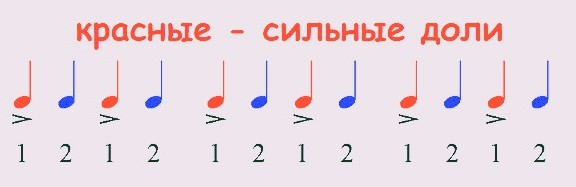
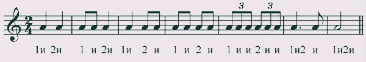

Урок 8. Сильные и слабые доли, размер 2/4, ритмические группы.
Теория
В музыке размер 2/4 означает, что в каждом такте две доли, и каждая доля равна четвертной ноте.
- Сильная доля — первая доля такта, она звучит более акцентировано.
- Слабая доля — вторая доля такта, звучит мягче.
- Ритмические группы — это объединения нот и пауз в такте, которые помогают лучше чувствовать ритм и структуру музыки.
- Вводные звуки — это неустойчивые ступени, которые стремятся к устойчивым и часто встречаются в начале или конце музыкальной фразы.
В марше размер 2/4: шаг — сильная доля, второй шаг — слабая доля. Ритмические группы могут состоять из двух восьмых, четвертной и восьмой с паузой и других сочетаний.
Вводные звуки делают музыку более выразительной, создают ожидание разрешения в устойчивую ступень.
Чередование сильных и слабых долей, а также ритмические группы — основа ритмического рисунка музыки.
Упражнения
- Распознавание размера: Определите, где сильная и слабая доля, и выделите ритмические группы (Марш (2/4): первая доля — сильная, вторая — слабая; Ритмическая группа: две восьмых — четвертная; Ритмическая группа: четвертная — восьмая — восьмая).
- Ритмическое упражнение: Простучите или пропойте ритмический рисунок в размере 2/4 (Четвертная, Восьмая, Восьмая, Четвертная).
Аудио-примеры
Пример марша в размере 2/4:
Визуальные примеры
Схема сильных и слабых долей в 2/4:

Примеры ритмических групп:
